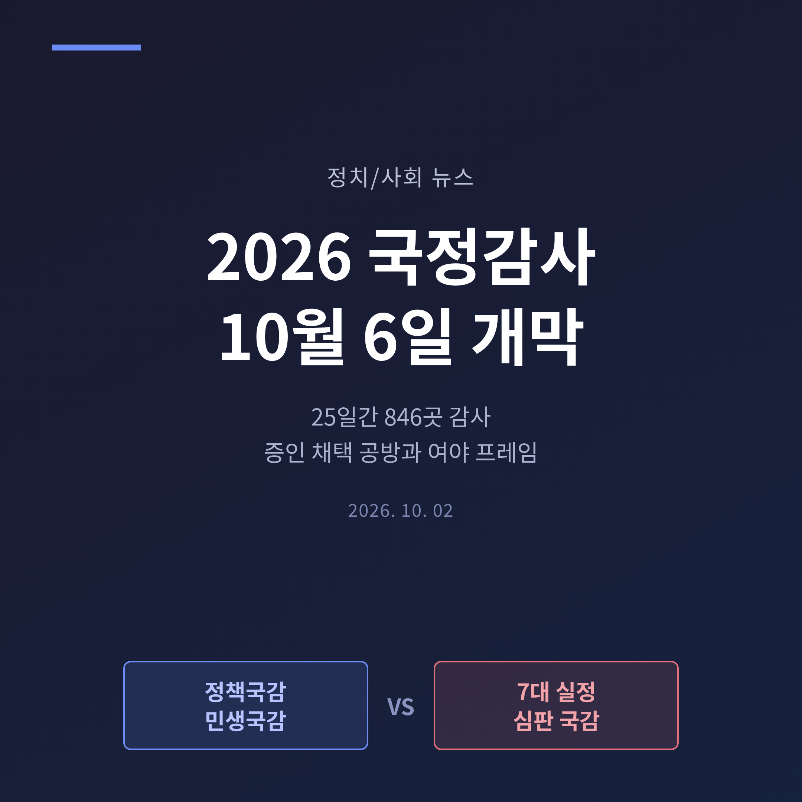
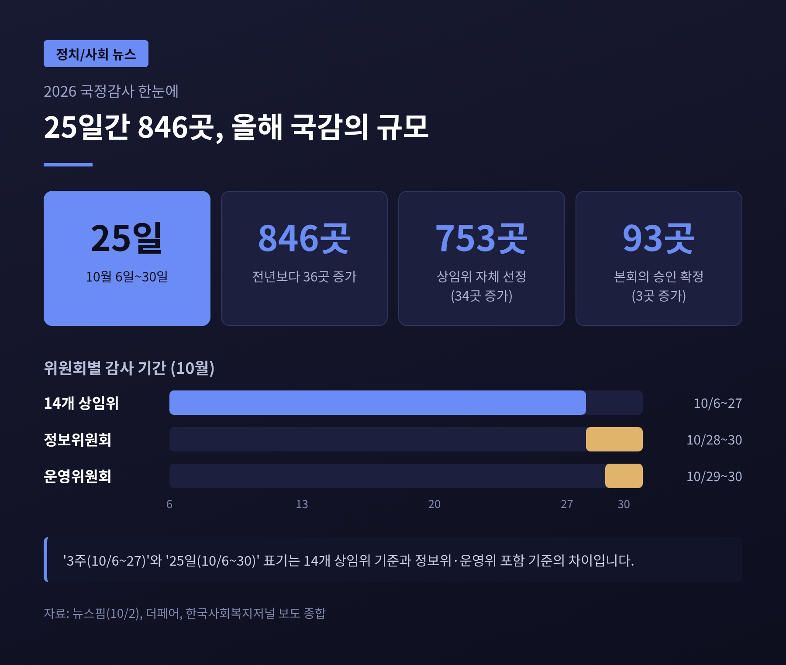
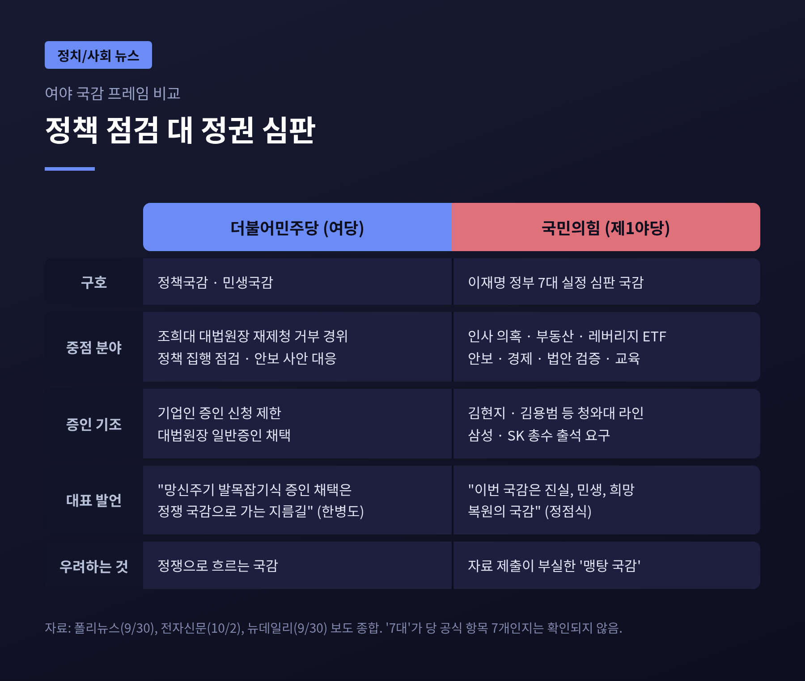
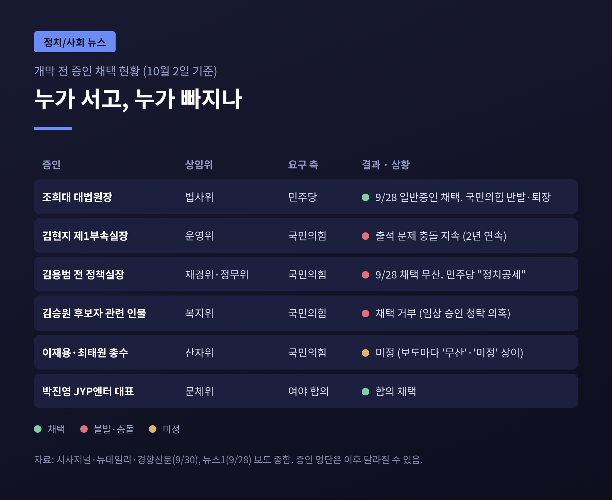
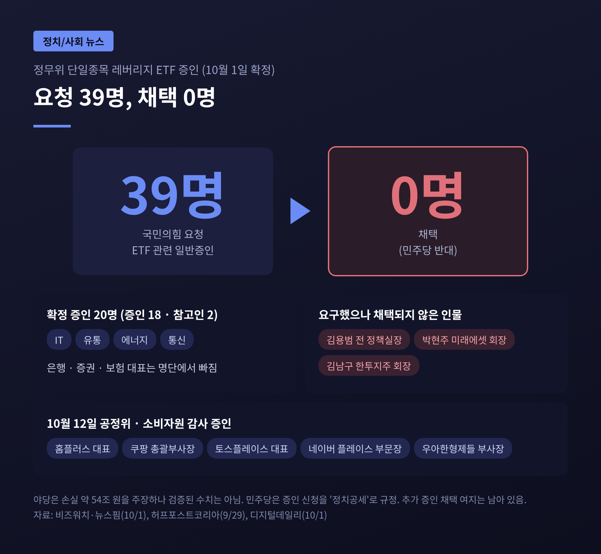
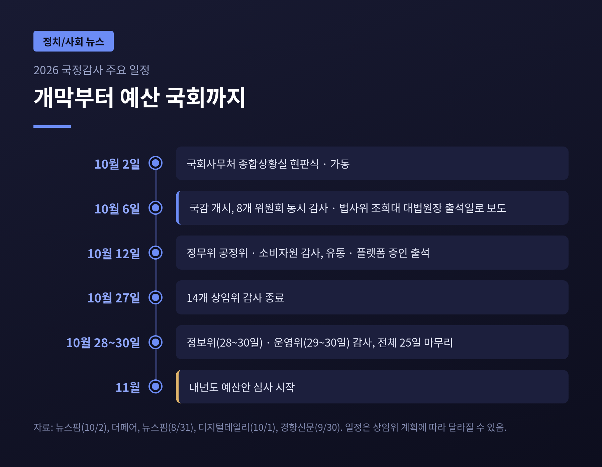

3줄 요약
오늘은 개막을 나흘 앞둔 2026년 국정감사의 쟁점 구도를 정리해 보려 합니다. 여야가 각각 어떤 틀로 국감에 임하는지, 어떤 피감기관과 증인을 두고 부딪치는지를 차례로 살펴보겠습니다. 정치 사안인 만큼 양측 입장을 함께 적었습니다.
국회사무처는 10월 2일 국정감사 종합상황실 현판식을 열고 가동에 들어갔습니다. 뉴스핌 보도에 따르면 올해 국감은 10월 6일부터 30일까지 25일간 진행됩니다. 감사 대상은 846곳입니다. 지난해보다 36곳 많습니다. 이 가운데 753곳은 각 상임위원회가 직접 골랐고, 93곳은 본회의 승인으로 확정됐습니다.
기간 표기는 기사마다 조금 다릅니다. 법제사법위원회를 포함한 14개 상임위는 10월 6일부터 27일까지, 정보위원회는 28~30일, 운영위원회는 29~30일에 감사를 합니다. 그래서 '3주'라는 표현과 '25일'이라는 표현이 함께 쓰입니다. 둘 다 틀린 말은 아니고 기준이 다를 뿐입니다.
종합상황실은 각 위원회의 감사 진행 상황을 한데 모아 의원실에 통계, 일정, 관련 법령과 선례를 제공하는 역할을 맡습니다. 첫 감사일인 6일에는 8개 위원회가 동시에 문을 엽니다.

정기국회는 9월 1일 개회해 약 100일간 이어집니다. 내년도 예산안 심사는 국감이 끝난 11월부터 시작됩니다. 국감은 한 해 정책의 성적표를 점검하고, 그 결과를 예산 심사로 넘기는 첫 관문입니다.
올해는 사정이 조금 더 무겁습니다. 이재명 대통령이 경제부총리, 국토교통부, 중소벤처기업부, 국방부, 법무부, 성평등가족부까지 6개 부처 장관을 교체했습니다. 개각 과정에서 후보자가 낙마하는 일이 이어졌고, 강훈식 비서실장은 9월 21일 인사 책임을 지고 사의를 밝혔습니다. 국감이 인사 시스템을 따지는 자리가 될 것이라는 전망이 나오는 이유입니다.
올해는 양측이 개막 전에 먼저 이름표를 붙였습니다.
더불어민주당은 '정책국감·민생국감'을 표방합니다. 정책 집행을 점검하는 자리로 만들자는 것입니다. 한병도 원내대표는 증인 문제와 관련해 "망신주기 발목잡기식 증인 채택은 정쟁 국감으로 가는 지름길"이라고 말했습니다.
국민의힘은 '이재명 정부 7대 실정 심판 국감'을 내세웁니다. 다만 이 '7대'가 당의 공식 항목 7개를 뜻하는지는 보도에서 확인되지 않습니다. 10월 2일 국감대책회의에서 정점식 원내대표가 밝힌 중점 검증 분야는 인사 의혹, 부동산, 레버리지 ETF, 안보 현안, 경제 현안, 법안 검증, 교육 혼란이었습니다. 정 원내대표는 "이번 국감은 진실, 민생, 희망 복원의 국감"이라고 말했습니다. 이 분야에는 이미 다룬 농지 전수조사와 보완수사권 폐지 문제도 포함돼 있습니다.
국민의힘은 9월 22일 국회 본관 앞에서 '실정 대국민 보고대회'를 열었고, 추석 민심을 본 뒤 장외투쟁을 국감과 병행할지 정하겠다는 입장이었습니다. 반면 여당 사무총장은 '어느 때보다 싸늘했던 추석 민심'을 언급하며 국정 운영 개선을 촉구한 것으로 머니투데이가 전했습니다.

개막 전 가장 뜨거운 부분은 증인입니다. 시사저널과 뉴데일리, 경향신문 보도를 종합하면 구도는 이렇습니다.
첫째, 법사위의 조희대 대법원장입니다. 법사위는 9월 28일 여당 주도로 조 대법원장을 일반증인으로 채택했습니다. 민주당은 대법관 후보 재제청을 거부한 경위와 책임을 묻겠다는 입장입니다. 국민의힘은 "삼권분립을 정면으로 짓밟는 반헌법적 폭거"라며 반발했고, 이재명 대통령을 증인으로 부르라고 맞섰습니다. 조 대법원장은 재제청을 거부한 이유로 청와대 공문에 구체적 사유와 헌법적 근거가 적혀 있지 않았다는 점을 들었고, 출근길에 "국정감사를 통해 이야기하겠다"고 밝혔습니다.
둘째, 야당이 요구했지만 채택되지 않은 증인입니다. 김현지 청와대 제1부속실장은 지난해엔 운영위 출석 문제로 부딪쳤고, 올해도 같은 이름이 다시 올랐습니다. 김용범 전 청와대 정책실장은 재경위 증인 채택이 9월 28일 무산됐습니다. 김승원 전 법무부 장관 후보자의 임상시험 승인 청탁 의혹과 관련한 인물들도 복지위에서 채택되지 않았습니다. 민주당은 이를 '정치공세'로 봅니다. 국민의힘은 인사 검증 실패와 정책 결정의 책임을 물어야 한다고 주장합니다.
셋째, 양측의 선택이 일관되지 않다는 비판입니다. 세계일보는 사설에서 "실세는 막고 조희대·기업인만 부르는" 구태라고 여권을 꼬집으면서, 동시에 야당이 기업인을 중복 신청하는 점도 지적했습니다. 어느 한쪽만의 문제로 보기는 어렵다는 이야기입니다.

가장 선명하게 갈린 곳은 정무위원회입니다. 쟁점은 5월에 출시된 단일종목 레버리지·인버스 ETF입니다. 국민의힘은 도입 과정의 책임을 밝혀야 한다며 김용범 전 정책실장과 박현주 미래에셋그룹 회장, 김남구 한국투자금융지주 회장 등을 증인으로 요구했습니다. 국민의힘은 투자자 손실이 약 54조 원에 이른다고 주장하며 특검법 추진까지 언급해 왔습니다. 이 수치는 야당 주장이며, 정부·여당의 반박 수치는 이번 조사에서 확인되지 않았습니다.
10월 1일 확정된 정무위 증인은 증인 18명, 참고인 2명으로 모두 20명입니다. 서일준 국민의힘 간사는 ETF 관련 일반증인 39명을 요청했지만 민주당 반대로 한 명도 채택되지 못했다고 밝혔습니다. 채택된 증인은 IT, 유통, 에너지, 통신 업계 중심이고 은행·증권·보험사 대표는 빠졌습니다. 10월 12일 공정거래위원회와 소비자원 감사에는 홈플러스, 쿠팡, 토스플레이스, 네이버, 우아한형제들 관계자가 나옵니다.
민주당은 김 전 실장 신청을 정치공세로 보고 있습니다. 야당은 권대영 금융위 부위원장이 자리를 옮겨 증언 기회가 사라졌다고도 주장합니다. 다만 금융투자협회와 한국거래소 관계자 등 추가 증인 채택 여지는 남아 있다고 합니다.

기업인 증인도 부딪치는 지점입니다. 야당은 호남 반도체 800조 원 프로젝트와 관련해 이재용 삼성전자 회장과 최태원 SK 회장 출석을 요구합니다. 민주당은 반대합니다. 이 두 총수의 증인 여부는 소스마다 '무산'과 '미정'으로 표현이 갈려 10월 2일 기준 확정으로 보기 어렵습니다. 국방위에서는 김동관 한화에어로스페이스 수석부회장, 농해수위에서는 조원태 한진그룹 회장 이름이 거론됩니다.
합의로 채택된 사례도 있습니다. 과방위는 쿠팡 정보보안최고책임자 등 개인정보 유출 관련 인사를 합의로 불렀고, 문화체육관광위는 박진영 JYP엔터 대표 프로듀서를 합의 채택했습니다. 국민 관심이 큰 사안은 여야가 접점을 찾는다는 뜻입니다. 경향신문은 지난해 기업인 증인이 200명 넘게 신청됐고 195명이 출석했다고 전했습니다. 경제계는 총수 소환이 장기 투자 계획에 부담을 준다고 우려합니다.
상임위별 의제도 갈립니다. 법사위는 대법원장 문제 외에 검찰청 폐지 이후의 공소청·중수청 출범 상황이 다뤄질 전망입니다. 국방위는 9월 21일 서부전선 DMZ 폭발 사고의 원인과 조사 지연을, 산자위는 반도체 프로젝트의 전력·용수·재원을, 재경위는 대미투자 1호 사업의 상업적 합리성을 따집니다. 국토위는 주택 공급과 LH 개편이 의제입니다. 이 가운데 일부는 비언론 정리 사이트의 분류를 따랐으므로 위원회 계획서가 확정되는 대로 달라질 수 있습니다.

앞으로의 변수는 세 가지입니다. 하나는 개막 직전까지 이어질 증인 협상입니다. ETF 건처럼 추가 증인 채택 여지가 남은 곳이 있고, 국감 도중 추가 채택도 가능합니다. 둘째는 조 대법원장의 출석 여부와 발언 수위입니다. 사법부 수장이 국회 증인석에서 어떤 말을 할지가 삼권분립 논쟁의 방향을 정할 것입니다. 셋째는 국민의힘이 장외투쟁을 병행할지 여부입니다.
양측의 우려는 서로 닮았습니다. 국민의힘은 자료 제출이 부실한 '맹탕 국감'을 걱정하고, 민주당은 증인 망신주기에 그친 '정쟁 국감'을 경계합니다. 둘 다 실제로는 같은 결과를 두려워하는 셈입니다.
정리하면 이렇습니다. 올해 국감은 846곳을 25일간 살피는 큰 일정이지만, 개막 전 관심은 몇몇 증인 이름에 몰려 있습니다. 증인 한 명의 출석 여부보다 중요한 것은 그 자리에서 어떤 자료와 답변이 나오느냐입니다.
결국 남는 것은 하나입니다. "국감은 누구를 부르느냐가 아니라, 무엇을 확인하느냐로 평가받는다."
25일이 끝난 뒤 이번 국감이 정책 점검이었는지 정치 공방이었는지 묻는다면, 저는 상임위별 회의록이 쌓인 뒤에 답하겠다고 하겠습니다.
※ 이 글은 2026년 10월 2일까지의 보도를 바탕으로 정리했으며, 증인 명단과 일정은 이후 달라질 수 있습니다.